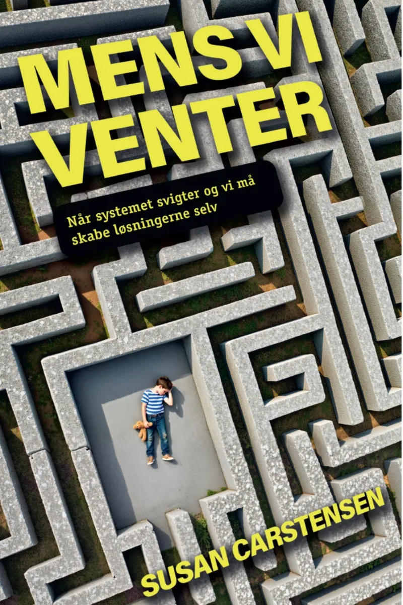
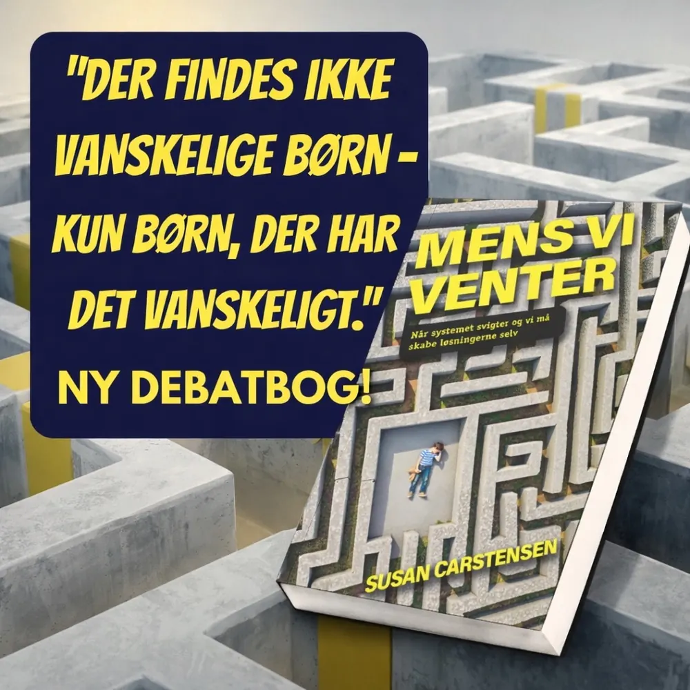

Når systemet svigter, og vi må skabe løsningerne selv
I Mens vi venter forbinder jeg personlige erfaringer med pædagogisk og neurobiologisk viden.

Børn kan ikke sætte deres liv på pause
Hvad sker der med børn og familier, mens de venter på hjælp? Og hvem tager ansvar, når alle kun har ansvar for en del?
I Mens vi venter sætter jeg fokus på børns alvorlige mistrivsel og de konsekvenser, det får, når økonomiske hensyn og delt ansvar spænder ben for den hjælp, der er brug for.
Jeg skriver om forældre, der står alene, om plejefamilier under pres og om fagpersoner, hvis viden ikke får plads. Om stress og belastning, der kommer til udtryk i børns adfærd. Og om behovet for at se barnet i sammenhæng med livet omkring det.
Jeg skrev ikke bogen for at blive en kendt forfatter eller for at tjene penge. Jeg skrev den, fordi noget skal dokumenteres.

Hvem er bogen til?
Bogen er en central del af mit arbejde som forfatter, foredragsholder og socialpolitisk stemme. Den er skrevet til dig, der er:
- forælder eller plejeforælder
- fagperson
- beslutningstager
- optaget af at forstå, hvad der er på spil, når børn og familier venter på hjælp
Denne bog er skrevet fra midten af det sociale systems brudflader. Den forener personlig erfaring med solid pædagogisk og neurobiologisk viden og giver et sjældent indblik i livet med børn i alvorlig mistrivsel, set inde fra familien, plejefamilien og praksisfeltet.
Dette er ikke en bog med hurtige løsninger. Det er en bog, der insisterer på at blive læst. For børnene råber allerede. Spørgsmålet er, om vi vil høre dem, før stilheden tager over.
Køb, lån eller læs som e-bog
Mens vi venter kan købes hos onlineboghandlere, lånes på biblioteket og findes også som e-bog.
På biblioteket
Lån bogen på dit lokale bibliotek, også som e-bog.
[Link til bibliotek.dk / eReolen]Tidligere udgivelser
Begge bøger kan fortsat findes på biblioteket.